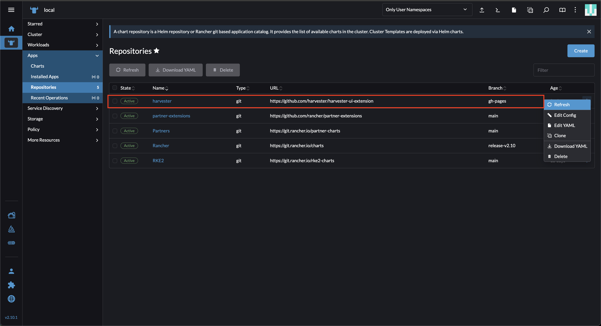
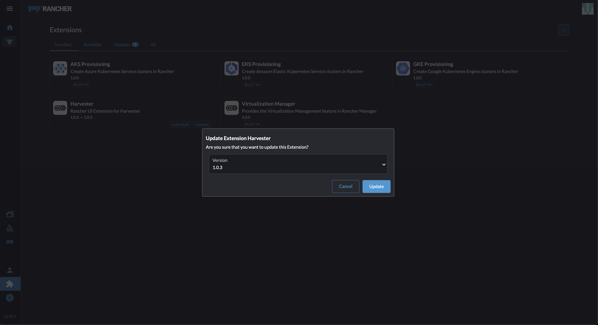
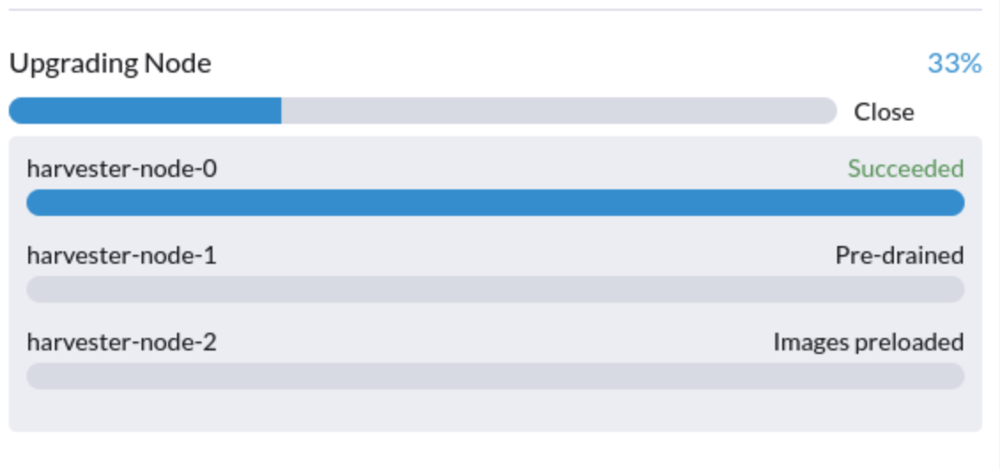
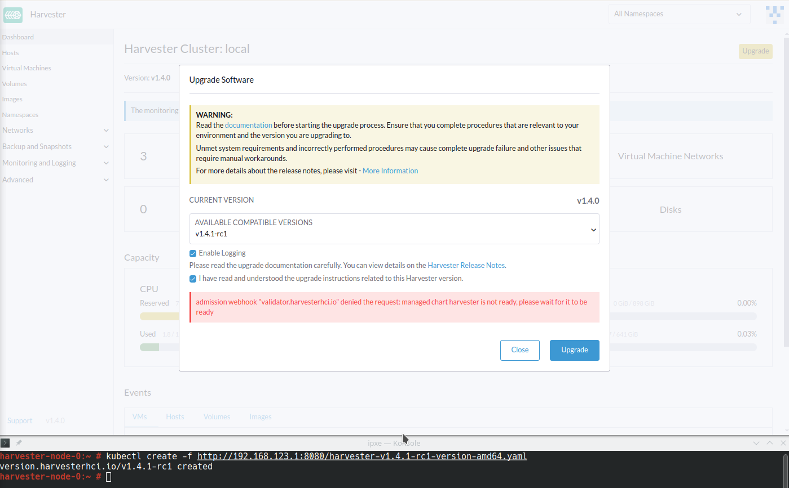
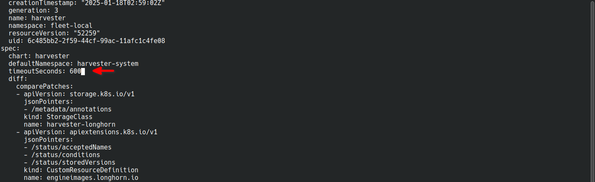

Upgrade from v1.4.0 to v1.4.1
General Information
An Upgrade button appears on the Dashboard screen whenever a new Harvester version that you can upgrade to becomes available. For more information, see Start an upgrade.
For air-gapped environments, see Prepare an air-gapped upgrade.
|
Check the disk usage of the operating system images on each node before starting the upgrade. To do this, access the node via SSH and run the command Example: # du -sh /run/initramfs/cos-state/cOS/* 1.7G /run/initramfs/cos-state/cOS/active.img 3.1G /run/initramfs/cos-state/cOS/passive.img If # mount -o remount,rw /run/initramfs/cos-state # fallocate --dig-holes /run/initramfs/cos-state/cOS/passive.img # mount -o remount,ro /run/initramfs/cos-state
|
Update Harvester UI Extension on Rancher v2.10.1
To import Harvester v1.4.1 clusters on Rancher v2.10.1, you must use v1.0.3 of the Rancher UI extension for Harvester.
-
On the Rancher UI, go to local → Apps → Repositories.
-
Locate the repository named harvester, and then select ⋮ → Refresh.
This repository has the following properties:
-
Branch: gh-pages

-
Go to the Extensions screen.
-
Locate the extension named Harvester, and then click Update.
-
Select version 1.0.3, and then click Update.

-
Allow some time for the extension to be updated, and then refresh the screen.
|
The Rancher UI displays an error message after the extension is updated. The error message disappears when you refresh the screen. This issue, which exists in Rancher v2.10.0 and v2.10.1, will be fixed in v2.10.2. |
Related issues:
Known Issues
1. Upgrade is stuck in the "Pre-drained" state
The upgrade process may become stuck in the "Pre-drained" state. Kubernetes is supposed to drain the workload on the node, but some factors may cause the process to stall.

A possible cause is processes related to orphan engines of the Longhorn Instance Manager. To determine if this applies to your situation, perform the following steps:
-
Check the name of the
instance-managerpod on the stuck node.Example:
The stuck node is
harvester-node-1, and the name of the Instance Manager pod isinstance-manager-d80e13f520e7b952f4b7593fc1883e2a.$ kubectl get pods -n longhorn-system --field-selector spec.nodeName=harvester-node-1 | grep instance-manager instance-manager-d80e13f520e7b952f4b7593fc1883e2a 1/1 Running 0 3d8h
-
Check the Longhorn Manager logs for informational messages.
Example:
$ kubectl -n longhorn-system logs daemonsets/longhorn-manager ... time="2025-01-14T00:00:01Z" level=info msg="Node instance-manager-d80e13f520e7b952f4b7593fc1883e2a is marked unschedulable but removing harvester-node-1 PDB is blocked: some volumes are still attached InstanceEngines count 1 pvc-9ae0e9a5-a630-4f0c-98cc-b14893c74f9e-e-0" func="controller.(*InstanceManagerController).syncInstanceManagerPDB" file="instance_manager_controller.go:823" controller=longhorn-instance-manager node=harvester-node-1
The
instance-managerpod cannot be drained because of the enginepvc-9ae0e9a5-a630-4f0c-98cc-b14893c74f9e-e-0. -
Check if the engine is still running on the stuck node.
Example:
$ kubectl -n longhorn-system get engines.longhorn.io pvc-9ae0e9a5-a630-4f0c-98cc-b14893c74f9e-e-0 -o jsonpath='{"Current state: "}{.status.currentState}{"\nNode ID: "}{.spec.nodeID}{"\n"}' Current state: stopped Node ID:The issue likely exists if the output shows that the engine is either not running or not found.
-
Check if all volumes are healthy.
kubectl get volumes -n longhorn-system -o yaml | yq '.items[] | select(.status.state == "attached")| .status.robustness'
All volumes must be marked
healthy. If this is not the case, report the issue. -
Remove the
instance-managerpod’s PodDisruptionBudget (PDB).Example:
kubectl delete pdb instance-manager-d80e13f520e7b952f4b7593fc1883e2a -n longhorn-system
Related issues:
-
[BUG v1.4.0 → v1.4.1-rc1 upgrade stuck in Pre-drained and the node stay in Cordoned]
-
[IMPROVEMENT Cleanup orphaned volume runtime resources if the resources already deleted]
2. Upgrade with default StorageClass that is not harvester-longhorn
Harvester adds the annotation storageclass.kubernetes.io/is-default-class: "true" to harvester-longhorn, which is the original default StorageClass. When you replace harvester-longhorn with another StorageClass, the following occur:
-
The Harvester ManagedChart shows the error message
cannot patch "harvester-longhorn" with kind StorageClass: admission webhook "validator.harvesterhci.io" denied the request: default storage class %!s(MISSING) already exists, please reset it first. -
The webhook denies the upgrade request.

You can perform any of the following workarounds:
-
Set
harvester-longhornas the default StorageClass. -
Add
spec.values.storageClass.defaultStorageClass: falseto theharvesterManagedChart.kubectl edit managedchart harvester -n fleet-local
-
Add
timeoutSeconds: 600to the Harvester ManagedChart spec.kubectl edit managedchart harvester -n fleet-local

For more information, see Issue #7375.
3. Upgrade is stuck in the "Waiting Reboot" state
The upgrade process may become stuck in the "Waiting Reboot" state after the Harvester v1.4.1 image is installed on a node and a reboot is initiated. At this point, the upgrade controller observes if the Harvester v1.4.1 operating system is running.
If the Harvester v1.4.1 image (hereafter referred to as active.img) fails to boot for any reason, the node automatically restarts in fallback mode and boots the previously installed Harvester v1.4.0 image (hereafter referred to as passive.img). The upgrade controller is unable to detect the expected operating system, so the upgrade remains stuck until an administrator fixes the problem with active.img.
active.img can become corrupted and unbootable because of insufficient disk space in the COS_STATE partition during the upgrade. This occurs if Harvester v1.4.0 was originally installed on the node and the system was configured to use a separate data disk. The issue does not occur in the following situations:
-
The system has a single disk that is shared by the operating system and data.
-
An earlier Harvester version was originally installed and then later upgraded to v1.4.0.
To check if the issue exists in your environment, perform the following steps:
-
Access the node via SSH and log in using the root account.
-
Run the commands
cat /proc/cmdlineandhead -n1 /etc/harvester-release.yaml.Example:
# cat /proc/cmdline BOOT_IMAGE=(loop0)/boot/vmlinuz console=tty1 root=LABEL=COS_STATE cos-img/filename=/cOS/passive.img panic=0 net.ifnames=1 rd.cos.oemlabel=COS_OEM rd.cos.mount=LABEL=COS_OEM:/oem rd.cos.mount=LABEL=COS_PERSISTENT:/usr/local rd.cos.oemtimeout=120 audit=1 audit_backlog_limit=8192 intel_iommu=on amd_iommu=on iommu=pt multipath=off upgrade_failure # head -n1 /etc/harvester-release.yaml harvester: v1.4.0
The presence of
cos-img/filename=/cOS/passive.imgandupgrade_failurein the output indicates that the system booted into fallback mode. The Harvester version in/etc/harvester-release.yamlconfirms that the system is currently using the v1.4.0 image. -
Check if
active.imgis corrupted by running the commandfsck.ext2 -nf /run/initramfs/cos-state/cOS/active.img.Example:
# fsck.ext2 -nf /run/initramfs/cos-state/cOS/active.img e2fsck 1.46.4 (18-Aug-2021) Pass 1: Checking inodes, blocks, and sizes Pass 2: Checking directory structure [...a list of various different errors may appear here...] e2fsck: aborted COS_ACTIVE: ********** WARNING: Filesystem still has errors ********** -
Check the partition sizes by running the command
lsblk -o NAME,LABEL,SIZE.Example:
# lsblk -o NAME,LABEL,SIZE NAME LABEL SIZE loop0 COS_ACTIVE 3G sr0 1024M vda 250G ├─vda1 COS_GRUB 64M ├─vda2 COS_OEM 64M ├─vda3 COS_RECOVERY 4G ├─vda4 COS_STATE 8G └─vda5 COS_PERSISTENT 237.9G vdb HARV_LH_DEFAULT 128G
The output in the example shows a
COS_STATEpartition that is 8G in size. In this specific case, which involves an unsuccessful upgrade attempt and a corruptedactive.img, the partition likely did not have enough free space for the upgrade to succeed.
To fix the issue, perform the following steps:
-
If your cluster has two or more nodes, access the remaining nodes via SSH and check the disk usage of
active.imgandpassive.img.# du -sh /run/initramfs/cos-state/cOS/* 1.7G /run/initramfs/cos-state/cOS/active.img 3.1G /run/initramfs/cos-state/cOS/passive.img
If
passive.imgconsumes 3.1G of disk space, run the following commands using the root account:# mount -o remount,rw /run/initramfs/cos-state # fallocate --dig-holes /run/initramfs/cos-state/cOS/passive.img # mount -o remount,ro /run/initramfs/cos-state
passive.imgis converted to a sparse file, which should only consume 1.7G of disk space (the same asactive.img). This ensures that the other nodes have enough free space, preventing the upgrade process from becoming stuck again. -
Access the stuck node via SSH, and then run the following commands using the root account:
# mount -o remount,rw /run/initramfs/cos-state # cp /run/initramfs/cos-state/cOS/passive.img \ /run/initramfs/cos-state/cOS/active.img # tune2fs -L COS_ACTIVE /run/initramfs/cos-state/cOS/active.img # mount -o remount,ro /run/initramfs/cos-stateThe existing (clean)
passive.imgis copied over the corruptedactive.img, and the label is set correctly. -
Reboot the stuck node, and then select the first entry (Harvester v1.4.1) on the GRUB boot screen.
The GRUB boot screen initially displays Harvester v1.4.1 (fallback) by default. Despite the displayed version, the system boots into Harvester v1.4.0.
-
Copy
rootfs.squashfsfrom the Harvester v1.4.1 ISO to a convenient location on the stuck node.The ISO can be mounted either on the stuck node or on another system. You can copy the file using the
scpcommand. -
Access the stuck node via SSH, and then run the following commands using the root account:
# mkdir /tmp/manual-os-upgrade # mkdir /tmp/manual-os-upgrade/config # mkdir /tmp/manual-os-upgrade/rootfs # mount -o loop rootfs.squashfs /tmp/manual-os-upgrade/rootfs # cat > /tmp/manual-os-upgrade/config/config.yaml <<EOF upgrade: system: size: 3072 EOF # elemental upgrade \ --logfile /tmp/manual-os-upgrade/upgrade.log \ --directory /tmp/manual-os-upgrade/rootfs \ --config-dir /tmp/manual-os-upgrade/config \ --debugYou must replace the sample path in the fourth line with the actual path of the copied
rootfs.squashfs.A new (clean)
active.imgis generated based on the root image from the Harvester v1.4.1 ISO.If any errors occur, save a copy of
/tmp/manual-os-upgrade/upgrade.log. -
Run the following commands:
# umount /tmp/manual-os-upgrade/rootfs # reboot
The node should boot successfully into Harvester v1.4.1, and the upgrade should proceed as expected.
Related issues: